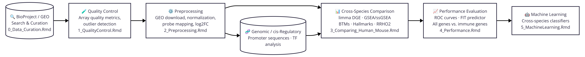

From mice to humans: A multi-omic predictive framework for translational immunology

Associated manuscript:
From mice to humans: A multi-omic predictive framework for translational immunology
Wasim Aluísio Prates-Syed, Aline A. Lira, Nelson Cortes, Jaqueline D.Q. Silva, Bárbara Hamaguchi, Evelyn Carvalho, Adriana Castillo-Chávez, Ricardo Durães-Carvalho, Otavio Cabral-Marques, Ester Cerdeira Sabino, José Eduardo Krieger, Thomas Hagan, Gustavo Cabral-Miranda.
Submitted to Genes and Immunity — currently under review.
🌐 Project site: wapsyed.github.io/mousetohuman_multilayer
Overview · Methodology (with the multilayer modelling pipeline) · Code planning (notebook map) — all in one page.
Overview
Mice are the dominant preclinical model in vaccine research, yet their translational value for human immune responses remains contested. This project systematically evaluates murine translatability across vaccination (Influenza, Hepatitis B), acute bacterial infection (S. aureus, E. coli) and sterile injury (burns and trauma), using publicly available blood transcriptome data from GEO and BioProject, and integrating transcriptomic profiles with sequence evolution and cis-regulatory architecture.
We show that while the expression patterns of individual orthologous genes correlated only moderately, blood transcriptional modules were highly conserved between species, and that translational accuracy depended on stimulus intensity. To identify the basis of gene expression convergence, we built multilayer models and benchmarked several algorithms under leave-one-condition-out cross-validation. A random forest integrating modular and gene-level features was the best model for human expression-rank transfer (R² = 0.23) and directional concordance (ROC-AUC = 0.85), while a lasso was marginally best at classifying leading-edge-gene sharing (ROC-AUC = 0.62). Mouse ranks and directions did not transfer on their own, whereas evolutionary and regulatory layers provided a conserved signal that improved prediction of human rank, direction and shared leading-edge genes. Finally, we provide a step-by-step R Markdown notebook that applies the best model to user input data.
Conditions Covered
| Challenge | Vaccine / Agent | Organisms | Human GEO | Mouse GEO | Platforms |
|---|---|---|---|---|---|
| Influenza | Fluad (TIV + MF59) | Human, Mouse | GSE124689 | GSE120661 | Agilent 8×60K |
| Hepatitis B | Engerix B | Human, Mouse | GSE124533 | GSE120661 | Agilent 8×60K |
| Staphylococcus aureus bacteremia | — | Human, Mouse | GSE33341 | GSE19668 | Affymetrix HuGene 1.0 ST, Mouse 430 2.0 |
| Escherichia coli sepsis | — | Human, Mouse | GSE33341 | GSE33341 | Affymetrix HuGene 1.0 ST, Mouse 430 2.0 |
| Burn | — | Human, Mouse | GSE37069 | GSE7404 | Affymetrix U133 Plus 2.0, Mouse 430.2 |
| Trauma | — | Human, Mouse | GSE36809 | GSE7404 | Affymetrix HuGene 1.0 ST, Mouse 430 2.0 |
| Duchenne muscular dystrophy (negative control) | — | Mouse | — | GSE1025 | Affymetrix Murine U74A v2 |
Analysis Workflow

The computational pipeline is structured into modular R Markdown notebooks designed to be executed sequentially:
0_Data_Curation.Rmd— Programmatically scans and filters raw BioProject metadata from NCBI. Isolates time-course vaccination and infection studies, applying inclusion/exclusion criteria to remove oncology, autoimmune, or toxicology studies.1_Download_Standardize_Datasets.Rmd— Downloads ExpressionSets viaGEOquery, normalizes array intensities (RMA for Affymetrix; quantile normalization vialimmafor Illumina/Agilent), resolves probe redundancy by selecting the probe with the highest median expression across samples, and annotates probes to orthologous human gene symbols.1.1_QualityControl.Rmd— Evaluates data fidelity using Array Quality Metrics (arrayQualityMetrics) and Relative Log Expression (RLE) distributions to identify sample-level outliers and technical variation.2_Differential_Gene_Expression.Rmd— Models differential expression per condition and species withlimmaEmpirical Bayes moderation (adj. p-value <= 0.05) and a simple paired/unpaired t-test, then combines the human and mouse results.3.1_DGE_analyses.Rmd— Executes cross-species gene-level comparative analyses. Computes macroevolutionary effect size delta (\(\Delta \text{log}_2\text{FC} = \text{log}_2\text{FC}_H - \text{log}_2\text{FC}_M\)), coefficient of variation (CV), sampling stability from downsampling, and inverse-variance statistical weights (\(1 / (SE_H^2 + SE_M^2)\)).3.2_Compute_GSEA.Rmd— Consolidates the multi-condition DGE data and runs unified pathway-level Gene Set Enrichment Analysis viafgseaon Blood Transcription Modules (BTMs) and MSigDB Hallmarks, using an exploratory threshold of \(\text{padj} \le 0.25\), alongside single-sample GSEA (GSVA/ssGSEA).3.3_Functional_Analyses.Rmd— Evaluates higher-order functional conservation. Generates module-level NES and mean log₂FC cross-species correlations over time (Figure 4a), quantifies shared vs. species-specific leading-edge genes (LEGs) (Figure 5a), and plots rank conservation for core modules such as "immune activation - generic cluster" (Figure 5b).4_Performance_DifferentTimepoints.rmd— Assesses murine predictive power for human module regulation. Generates ROC curves and computes Area Under the Curve (AUC) (Figure 4b) for cross-temporal (different) timepoints, benchmarked against biological controls (e.g., Duchenne Muscular Dystrophy, DMD) and permutation null distributions.5.1_EvolutionaryAnalysis_Protein.Rmd&5.2_EvolutionaryAnalysis_Regulation.Rmd— Dissects evolutionary determinants. Retrieves Ensembl BioMart coding sequences (CDS) and amino acid identity %, computes codon-level pairwise alignment and Kimura 2-Parameter (K80) genetic distances, and integrates ENCODE candidate Cis-Regulatory Elements (cCREs: PLS, pELS, dELS, and CTCF-bound sites) across GRCh38 and mm10 to assess promoter conservation.6_Statistical_Modelling.Rmd— Consolidated modelling pipeline that predicts the human response gene by gene. Uses two nested feature layers (DGE Baseline → Full + BTM), two universes (all human DEGs for rank transfer and direction; mouse LEGs for shared-LEG classification), and leave-one-condition-out (LOCO) cross-validation. Benchmarks four algorithms — linear/logistic regression, lasso, random forest and a neural network — and exports the best model per task plus four out-of-fold scores (score_shared,score_rank,score_direction,score_translational). See Statistical modelling below.
Auxiliary notebooks:
FIT_Exploration_Prediction.Rmd (Found In
Translation benchmarking),
ImmuneGO_Mouse.Rmd (mouse immune gene-set
construction) and Tests.Rmd (exploratory
tests).
Repository Structure
mousetohuman_multilayer/
├── scripts_notebooks/
│ ├── required.R # Global libraries, theme_vaxgo, palettes, utility functions
│ ├── 0_Data_Curation.Rmd # BioProject curation and filtering
│ ├── 1_Download_Standardize_Datasets.Rmd # GEO download, normalization, probe collapsing, annotation
│ ├── 1.1_QualityControl.Rmd # Array quality metrics and RLE quality control
│ ├── 2_Differential_Gene_Expression.Rmd # limma / t-test DGE, human-mouse combination
│ ├── 3.1_DGE_analyses.Rmd # Cross-species DGE comparison, noise & delta metrics
│ ├── 3.2_Compute_GSEA.Rmd # fgsea & ssGSEA unified pipeline (BTMs, Hallmarks)
│ ├── 3.3_Functional_Analyses.Rmd # Functional correlations, LEGs, rank conservation
│ ├── 4_Performance_DifferentTimepoints.rmd # Cross-temporal ROC/AUC benchmarking with controls
│ ├── 5.1_EvolutionaryAnalysis_Protein.Rmd # Protein sequence identity and Kimura K80 CDS distance
│ ├── 5.2_EvolutionaryAnalysis_Regulation.Rmd # ENCODE cCRE promoter/enhancer regulatory architecture
│ ├── 6_Statistical_Modelling.Rmd # LOCO modelling: DGE Baseline -> Full + BTM (outputs to Modelling/)
│ ├── FIT_Exploration_Prediction.Rmd # Found In Translation (FIT) benchmarking
│ ├── ImmuneGO_Mouse.Rmd # Mouse immune gene-set construction
│ └── Tests.Rmd # Exploratory tests
├── Modelling/ # Artefacts written by 6_Statistical_Modelling.Rmd
│ ├── Models/ # Fitted workflows (rf_model_*.rds, nn_model_*.rds) and metrics
│ ├── Tables/ # LOCO metrics, observed-vs-predicted, priority lists
│ └── Figures/ # Fig. 7 (multilayer modelling), contributions, AUC bars
├── tables/ # Data files (raw inputs + processed/intermediate)
│ ├── raw_data/ # Raw expression matrices, platform/GPL and series-matrix files
│ ├── processed_data/ # Cleaned metadata and processed expression matrices
│ ├── Data curation/ # BioProject/GEO curation tables and plots
│ ├── Differential gene expression/ # DEG tables, esets, log2FC and annotation objects
│ ├── Functional analysis/ # GSEA/BTM/Hallmark results and correlation summaries
│ ├── Gene sets/ # BTM, ImmuneGO and Hallmark gene-set definitions
│ ├── Gene and Protein sequences/ # CDS sequences, alignments and distance tables
│ ├── Genomic/ # ENCODE cCRE BED files
│ ├── Regulation/ # cCRE/TF regulation tables
│ ├── FIT/ # Found In Translation inputs/outputs
│ ├── Performance/ # ROC/AUC data for performance tests
│ └── Quality control/ # QC reports and plots
├── Figures/ # Generated exploratory and diagnostic figures
└── renv.lock # Pinned R dependency environment snapshotGene Sets Used
| Gene Set | Description | Source | Reference |
|---|---|---|---|
| BTMs | Blood Transcription Modules (346 consensus modules) | Li et al. | Nat Immunol 2014, 2021 |
| MSigDB Hallmarks | 50 well-defined hallmark biological processes | Broad Institute | Liberzon et al., Cell Syst 2015 |
| ImmuneGO | Mouse-adapted immune Gene Ontology annotations | tables/Gene sets/ |
Custom curated |
| VaxSigDB | Curated vaccination response signatures | tables/Gene sets/ |
Custom curated |
Software & Reproducibility Environment
All package dependencies are managed via renv. Pinned
core specifications:
| Component | Version | Description |
|---|---|---|
| R | ≥ 4.5.2 | Base language environment |
| Bioconductor | 3.22 | Genomic and microarray annotation suites |
| Operating System | Linux (Ubuntu/Zorin); macOS and Windows (WSL2) compatible | Tested on 64-bit Linux |
| Hardware | ≥ 16 GB RAM recommended | High-dimensional expression matrices |
Key Packages Pinning
| Package | Version | Source | Key Usage |
|---|---|---|---|
| tidyverse | 2.0.0 | CRAN | Data wrangling, piping, and visualization |
| limma | 3.66.0 | Bioconductor | Linear modeling, empirical Bayes moderation, quantile normalization |
| GEOquery | 2.78.0 | Bioconductor | Programmatic retrieval of GEO datasets |
| fgsea | 1.36.2 | Bioconductor | Fast Gene Set Enrichment Analysis |
| GSVA | 2.4.4 | Bioconductor | Single-sample gene set enrichment (ssGSEA) |
| biomaRt | 2.66.1 | Bioconductor | Cross-species orthology and Ensembl sequence retrieval |
| pwalign | Bioconductor 3.22 | Bioconductor | Pairwise global sequence alignment |
| ape | 5.8 | CRAN | DNAbin conversion and Kimura K80 distance calculation |
| tidymodels | 1.5.0 | CRAN | Machine learning recipes, workflows, and evaluation |
| ranger | 0.18.0 | CRAN | High-performance Random Forest implementation |
| glmnet | 5.0 | CRAN | Lasso and elastic-net regularised regression |
| nnet | 7.3.21 | CRAN | Single-hidden-layer neural network |
| butcher | 0.4.0 | CRAN | Model size reduction for serialisation
(butcher()) |
| ComplexHeatmap | 2.26.1 | Bioconductor | High-dimensional heatmap visualizations |
| pROC | 1.18.5 | CRAN | ROC curve and AUC generation |
All
intermediate and processed files are archived under tables/
(raw_data/ for raw downloads and platform files;
processed_data/ for cleaned metadata and expression
matrices; topic folders such as
Differential gene expression/,
Functional analysis/ and Gene sets/ for
derived objects), allowing downstream analyses to run without
re-downloading raw files. Users wishing to replicate preprocessing from
scratch can query the original accessions:
Data Acquisition
All pre-processed intermediate files are archived in
tables/, allowing downstream analyses (steps 3–6) to run
without re-downloading raw files. Users wishing to replicate
preprocessing from scratch can query the original accessions:
| Condition | Organism | Accession | Platform | Platform ID |
|---|---|---|---|---|
| Influenza (Fluad) + Hepatitis B | Mouse | GSE120661 | Agilent SurePrint G3 Mouse GE 8x60K Microarray | GPL10787 |
| Influenza (Fluad) | Human | GSE124689 | Agilent-048908 8x60K whole genome | GPL21272 |
| Hepatitis B (Engerix B) | Human | GSE124533 | Agilent-048908 8x60K whole genome | GPL21272 |
| S. aureus infection | Mouse | GSE19668 | Affymetrix Mouse Genome 430 2.0 Array | GPL1261 |
| S. aureus infection | Human | GSE33341 | Affymetrix Human Gene 1.0 ST | GPL6244 |
| E. coli infection | Mouse | GSE33341 | Affymetrix Mouse Genome 430 2.0 Array | GPL1261 |
| E. coli infection | Human | GSE33341 | Affymetrix Human Gene 1.0 ST | GPL6244 |
| Burn | Mouse | GSE7404 | Affymetrix Mouse 430.2 | GPL1261 |
| Burn | Human | GSE37069 | Affymetrix Human Genome U133 Plus 2.0 Array | GPL570 |
| Trauma | Mouse | GSE7404 | Affymetrix Mouse Genome 430 2.0 Array | GPL1261 |
| Trauma | Human | GSE36809 | Affymetrix Human Gene 1.0 ST | GPL6244 |
| Duchenne Muscular Dystrophy | Mouse | GSE1025 | Affymetrix Murine Genome U74A Version 2 Array | GLP81 |
Reproducing the Analysis
Step 0 — Setup Environment
git clone https://github.com/wapsyed/mousetohuman_multilayer.git
cd mousetohuman_multilayer# In R console:
renv::restore() # Restores exact package environmentNotebook Execution Guide
Each notebook sources scripts_notebooks/required.R,
initializing the shared workspace, custom ggplot2 themes
(theme_vaxgo), palettes, and utility functions.
| Step | Notebook | Key Inputs | Key Outputs |
|---|---|---|---|
| 0 | 0_Data_Curation.Rmd |
tables/Data curation/animals_vaccines_bioproject_result.txt |
tables/Data curation/datacuration_step2.csv |
| 1 | 1_Download_Standardize_Datasets.Rmd |
Raw GEO ExpressionSets (series matrices in
tables/raw_data/) |
tables/raw_data/*_exprs.rds,
tables/processed_data/*_exprs_hgnc_symbol.rds |
| 1.1 | 1.1_QualityControl.Rmd |
tables/Differential gene expression/*_eset.rds,
tables/processed_data/*_metadata.rds |
QC reports and RLE plots |
| 2 | 2_Differential_Gene_Expression.Rmd |
tables/processed_data/*_exprs.rds |
tables/Differential gene expression/*_dge_limma_degs.rds,
*_log2fc_sample_clean_long.rds |
| 3.1 | 3.1_DGE_analyses.Rmd |
tables/Differential gene expression/all_human_mouse_dge_limma_degs.rds |
tables/human_mouse_log2fc_avg_wide_all.rds,
divergence weights |
| 3.2 | 3.2_Compute_GSEA.Rmd |
all_human_mouse_dge_limma_degs_matched_control.rds,
BTM & Hallmark CSVs |
tables/Functional analysis/all_human_mouse_gsea_btm_results.rds |
| 3.3 | 3.3_Functional_Analyses.Rmd |
tables/Functional analysis/all_human_mouse_gsea_btm_results.rds,
..._legs.rds |
Module correlations (Fig 4a), LEGs (Fig 5a), rank conservation (Fig 5b) |
| 4 | 4_Performance_DifferentTimepoints.rmd |
tables/Differential gene expression/all_human_mouse_dge_limma_degs_matched_filtered.rds,
BTM annotations |
ROC/AUC (Fig 4b), PR curves |
| 5.1 | 5.1_EvolutionaryAnalysis_Protein.Rmd |
Ensembl BioMart CDS data,
all_human_mouse_gsea_btm_legs.rds |
tables/Gene and Protein sequences/human_mouse_cds_distance.rds |
| 5.2 | 5.2_EvolutionaryAnalysis_Regulation.Rmd |
ENCODE cCRE BED files
(tables/Genomic/*), TSS coords |
tables/Regulation/cres_type_homology_comparison.rds |
| 6 | 6_Statistical_Modelling.Rmd |
human_mouse_statsmodelling_gene_annotated_layers.rds,
tables/Functional analysis/dge_btm_process_genes_diff_bygene_clean_filtered.rds |
Modelling/Models/rf_model_*.rds,
LOCO metrics, Fig. 7 |
Statistical modelling {#statistical-modelling-v2}
The consolidated pipeline 6_Statistical_Modelling.Rmd
(in scripts_notebooks/, writing its artefacts to
Modelling/) predicts the human response
gene by gene from a mouse experiment, using biological feature layers
and leave-one-condition-out (LOCO)
cross-validation.
Design
- Feature layers (2, nested):
DGE Baseline(mouse differential-expression summary) →Full + BTM(adds BTM enrichment scores/ranks, sequence evolution, TF features and cCRE architecture). - Universes: all human DEGs
(
p_adj_human <= 0.05) for rank transfer and direction; mouse leading-edge genes (SharedvsMouse only) for shared-LEG classification. - Targets: absolute rank (0–100, percentile of
|Log2FC| x -log10(adj P)), directional concordance (sign_mouse == sign_human), and LEG sharing (SharedvsMouse only). - Framings:
A_predictivekeeps the mouse magnitude;B_explanatoryremoves it (tests the biological layers alone). - Algorithms benchmarked: linear/logistic regression,
lasso (
glmnet, penalty = 0.01), random forest (ranger, 500 trees) and a single-hidden-layer neural network (nnet, 10 units).
Best model per task (out-of-fold, LOCO)
| Task | Metric | Random Forest | Neural Network | Lasso | Linear |
|---|---|---|---|---|---|
| Shared LEGs (predictive, Full + BTM) | ROC-AUC | 0.572 | 0.615 | 0.617 | 0.601 |
| Shared LEGs (explanatory, Full + BTM) | ROC-AUC | 0.622 | 0.603 | 0.627 | 0.611 |
| Human rank transfer (Mouse + layers) | R² | 0.234 | 0.068 | 0.072 | 0.072 |
| Directional concordance (Direction + layers) | ROC-AUC | 0.849 | 0.619 | 0.517 | 0.529 |
The random forest is the best algorithm for rank transfer and directional concordance; for shared-LEG classification the lasso is marginally better by ROC-AUC (0.617 vs 0.601 predictive; 0.627 vs 0.611 explanatory). The lasso improved only marginally over the unregularised linear model for shared-LEG classification and not at all for rank transfer or direction, indicating that the transferable signal for rank and direction is predominantly non-linear and multivariate.
Exported artefacts
(Modelling/Models/)
| File | Task |
|---|---|
lasso_model_shared.rds |
Shared vs Mouse-only classification (best model) |
rf_model_shared.rds /
nn_model_shared.rds |
Shared vs Mouse-only classification (alternatives) |
rf_model_rank.rds /
nn_model_rank.rds |
Human absolute rank regression |
rf_model_direction.rds /
nn_model_direction.rds |
Directional concordance classification |
Models are saved with butcher() and
compress = "xz". Each can be applied to a new mouse
experiment with predict():
model_rank <- readRDS("Modelling/Models/rf_model_rank.rds")
predict(model_rank, new_data = my_features)Out-of-fold scores
Every gene is scored by a model trained without its pathogen:
score_shared— probability of being a shared LEG.score_rank— predicted human absolute rank (0–100).score_direction— probability of concordant direction.score_translational—score_rank x score_direction.
Resources to help you apply the models:
- Notebook (recommended): https://github.com/wapsyed/mousetohuman_predict — a step-by-step R Markdown notebook covering the full flow from DGE input to GSEA, model prediction and score visualisation.
Citation
If you use this code or data, please cite:
Prates-Syed WA, Lira AA, Cortes N, Silva JDQ, Hamaguchi B, Carvalho E, Castillo-Chávez A, Durães-Carvalho R, Cabral-Marques O, Sabino EC, Krieger JE, Hagan T, Cabral-Miranda G. From mice to humans: A multi-omic predictive framework for translational immunology. Genes and Immunity (under review).
License
This project is licensed under the MIT License — see the LICENSE file for details.